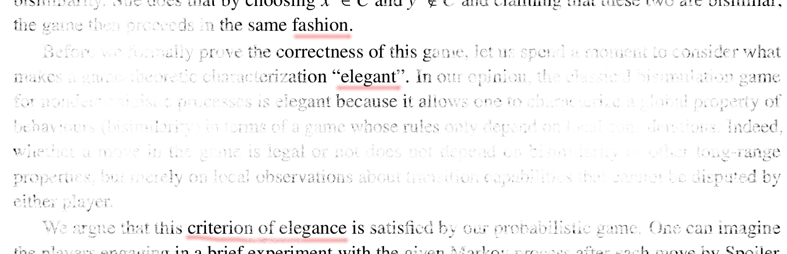

We consider continuous state space (but discrete time):
$$(S,\Sigma) \text{ measurable space } \qquad \Delta : S \times A \times \Sigma \to [0,1]$$
$\Delta(q,a,T)$ is the probability to go to $T \in \Sigma$ from $q$ under action $a$
Two Theorems (Larsen & Skou 89, Desharnais et al,...):
The state space is a Polish space (actually analytic space) and the set of actions is countable
Two states are bisimiliar if, and only if, they satisfy the same formulas of the modal logic (only conjunctions)
A state simulates another if, and only if, it satisfies more formulas of the modal logic (conjunctions and disjunctions)
Æsthetics and Connections to Warsaw
This paper is about giving æsthetically pleasing proofs for the two theorems above using the topology of Polish spaces.
20th century: Sierpiński, Tarski, Mostowski, and others invented Polish spaces in Warsaw
1997: Prakash Panangaden and coauthors introduced probabilistic bisimulation for continuous space Markov processes at LICS in Warsaw,
test-of-time award this year
2012-2015: I took my PhD in Warsaw (and Paris)
Since 2015: Bartek Klin is a professor in Warsaw

Bisimulation for Labelled Transition Systems
Labelled Transition Systems: $\Delta : S \times A \to \mathcal{P}(S)$
Bisimulation game: Duplicator claims that $p \equiv q$
Spoiler: pick $a$ in $A$ and $p' \in S$ such that $p' \in \Delta(p,a)$
Duplicator: $q' \in \Delta(q,a)$ and claims $p' \equiv q'$
We say that $p$ and $q$ are bisimilar if Duplicator can play forever
Coinductive definition: If $p \equiv q$, then for all $a$ in $A$, for all $p' \in \Delta(p,a)$,
there exists $q' \in \Delta(q,a)$ such that $p' \equiv q'$
Bisimulation for Labelled Markov Processes
Labelled Markov Processes: $\Delta : S \times A \times \Sigma \to [0,1]$
$\Delta(q,a,T)$ is the probability to go to $T \in \Sigma$ from $q$ under action $a$
Coinductive definition: If $p \equiv q$, then for all $a$ in $A$, for all $C \in \Sigma$ closed under $\equiv$,
$$\Delta(p,a,C) = \Delta(q,a,C)$$
Equivalent game: Duplicator claims that $p \equiv q$
Spoiler: pick $a$ in $A$ and $C \in \Sigma$ such that $\Delta(p,a,C) \neq \Delta(q,a,C)$
Duplicator: $p'$ in $C$, $q'$ not in $C$ and claim that $p' \equiv q'$
We say that $p$ and $q$ are bisimilar if Duplicator can play forever
Bisimulation game: Duplicator claims that $p \equiv q$
Spoiler: pick $a$ in $A$ and $C \in \Sigma$ such that $\Delta(p,a,C) \neq \Delta(q,a,C)$
Duplicator: $p'$ in $C$, $q'$ not in $C$ and claim that $p' \equiv q'$
Two identical proofs
Theorem 11 and 15 (set-theoretic)
Theorem 12 and 16 (topological, for Polish spaces)